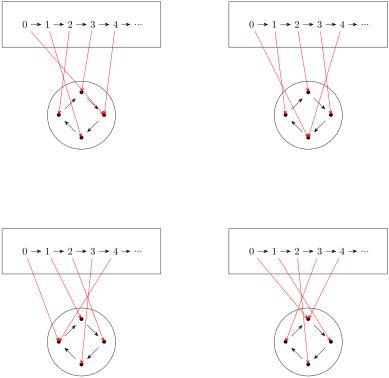

Section4.10Session 15: Objectification of Properties
This week was an interesting development. Up until this point we’ve only been using numbers as a playground for exploring ideas. Now that monoids have allowed us to build a formalization of natural numbers in the category of endomaps, we’ve opened up a whole new means of analyzing maps.
My prediction about cycle lenths and divisibility was spot on. It was nice to have confirmation that I’m on the right track. I also found the definition of \(\Omega\) was rather intriguing. I can see this having applications to things like "floating point" numbers where treating infinity as a number has advantages. In fact, a lot of idea from throughout the text seem to be coming together. Slowly.
Example4.10.1.Exercise 1:.
...both period 5 and period 7...
Solution.
Suppose we have some element \(x_0 \in X^{\circlearrowright \alpha}\) with \(\alpha^ 5 x_0 = x_0 = \alpha^7 x_0\text{.}\) Our associative property implies \(\alpha^7 x_0 = \alpha ^2 \circ \alpha^5 x_0 = \alpha^2 x_0\text{.}\) However, \(\alpha^7 x_0\) is just \(x_0\) so it follows that \(\alpha^2 x_0 = x_0\text{.}\) And if that’s the case, then we can also represent \(\alpha^6 x_0\) as either \(\alpha^2 \circ \alpha^2 \circ \alpha^2 x_0 = x_0\) or \(\alpha \circ \alpha^5 x_0 = \alpha x_0\text{.}\)
In the former case, \(\alpha^2 = 1_X\) implies \(\alpha^6 x_0 = \alpha^2 \circ \alpha^2 \circ \alpha^2 x_0 = x_0\text{.}\) In the latter, \(\alpha^5 = 1_X\) implies \(\alpha^6 x_0 = \alpha \circ \alpha^5 x_0 = \alpha x_0\text{.}\) Since both are equivalent to \(\alpha^6 x_0\text{,}\) we have established that \(\alpha x_0 = x_0\) which proves \(x_0\) is a fixed point.
Example4.10.2.Exercise 2:.
...all maps from \(\mathbb{N}^{\circlearrowright \alpha}\) to \(C_4\text{...}\)
Solution.
In order to preserve structure, the arrows need to flow in the same direction. Any map \(\mathbb{N}^{\circlearrowright \sigma} \rightarrow C_4\) that preserve the structure of the loop. That is, whatever point we decide to send \(0\) to in the cycle determines where we need to send \(1,2,3\text{.}\) Once we hit \(4\) we need to loop back to \(0\text{.}\)
These 4 possible permutations are diagrammed below:

Figure4.10.3.All maps from \(\mathbb{N}^{\circlearrowright \alpha}\) to \(C_4\)
Example4.10.4.Exercise 3:.
...evaluation at 0 and iteration...
Solution.
I’m not exactly what this exercise is asking, so let’s start by laying out the context.
Figure4.10.5.Iteration and evaluation defined
We’re told that "’Iteration’ assigns to each \(y\) in \(Y\) the map \(f\) given by \(f(n) = \beta^n(y)\)".
I think my confusion here is stemming from a little uncertainty about the domain and codomain of \(f\text{.}\) The diagram I recreated above suggests that \(f\) is a map \(\mathbb{N}^{\circlearrowright \sigma} \rightarrow Y^{\circlearrowright \beta}\text{,}\) but part of me thinks I should treat \(f\) as an abitrary map \(X^{\circlearrowright \alpha} \rightarrow Y^{\circlearrowright \beta}\) in the context of a broader category of \(\mathcal{S}^\circlearrowright\text{.}\) Part of me is wondering if our definition of \(\mathbb{N}^{\circlearrowright \sigma}\) as a monoid circumvents this question entirely by defining \(0\) as an element of \(X\) with the desired property in \(\mathbb{N}^{\circlearrowright \sigma}\text{:}\) a point that is the origin of an arrow but not a target.
In some of the earlier Sessions, I found it helpful to think about the "image" produced by a given map. Once we have a point \(y \in Y^{\circlearrowright \beta}\) we can ask whether or not \(\beta y = y\) produces a fixed point. This is a binary question for which the answer either needs to be "true" or "false". Let’s call this space \(\mathbf{2} = \{0,1\}\) with the conventions \(0 = \text{false}\) if \(\beta y = y\) and \(1 = \text{true}\) if \(\beta y \neq y\text{.}\) Let’s define this map as \(Y^{\circlearrowright \beta} \xrightarrow{g} \mathbf{2}^{\circlearrowright \gamma}\text{.}\)
Obviously such map exists between sets, but the real question is whether or not \(\gamma\)preserves structure within our category. There are precisely 4 possible endomaps \(\gamma\) on \(\mathbf{2}\) we could possibly have: an identity map, an antipodal map, and two idempotents resulting in \(0, 1\) respectively. This allows us to ask further questions, like if \(\gamma\) is has a retraction. Of the four possible endomaps on \(\mathbf{2}\text{,}\) only the identity map and the antipodal map would even qualify because we know there’s no possible retraction from \(\mathbf{2} \rightarrow \mathbf{1}\text{.}\)
This is all still really fuzzy and I feel like I’m missing something, so I think I’m going to let this information stew for another week and come back to it..